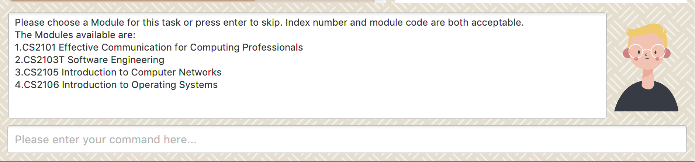
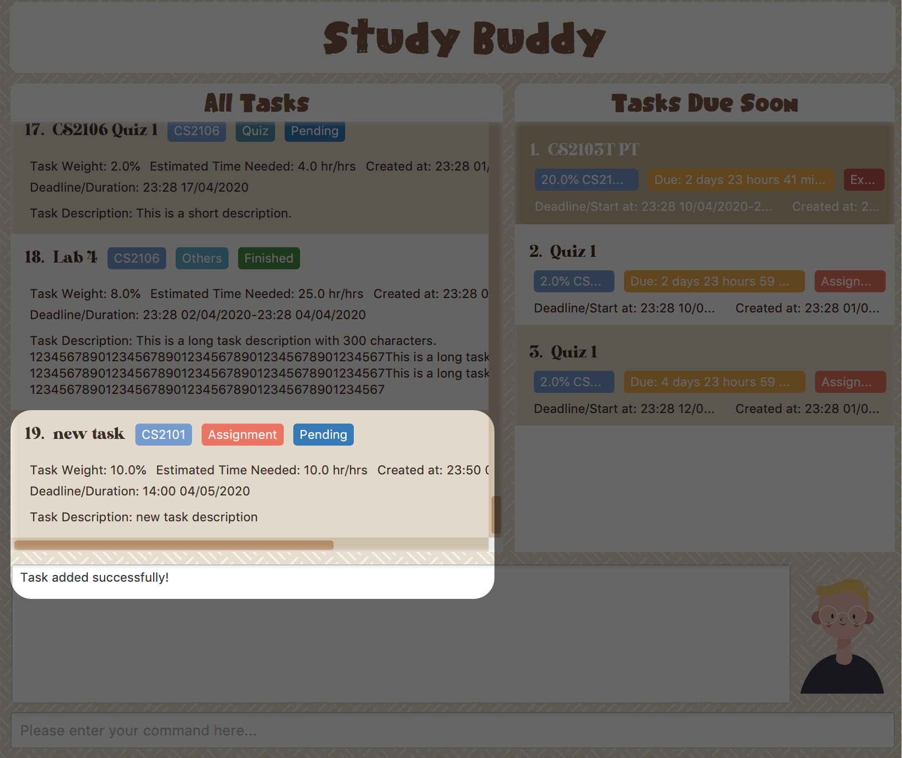
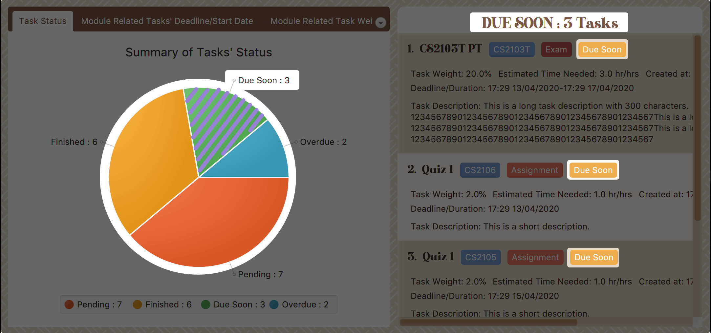
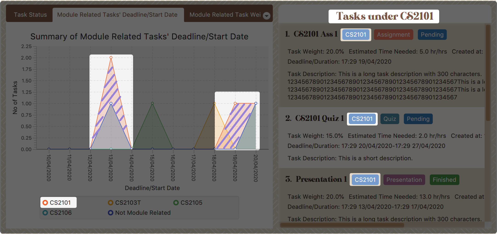
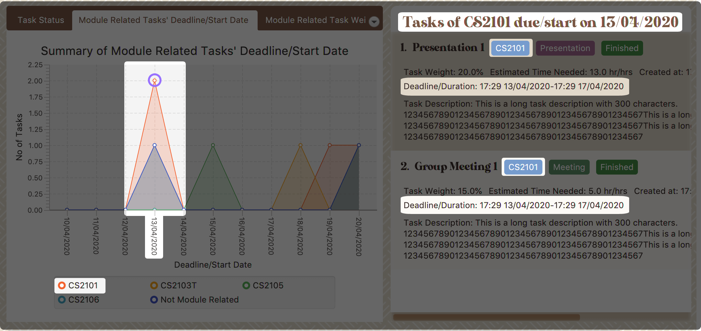
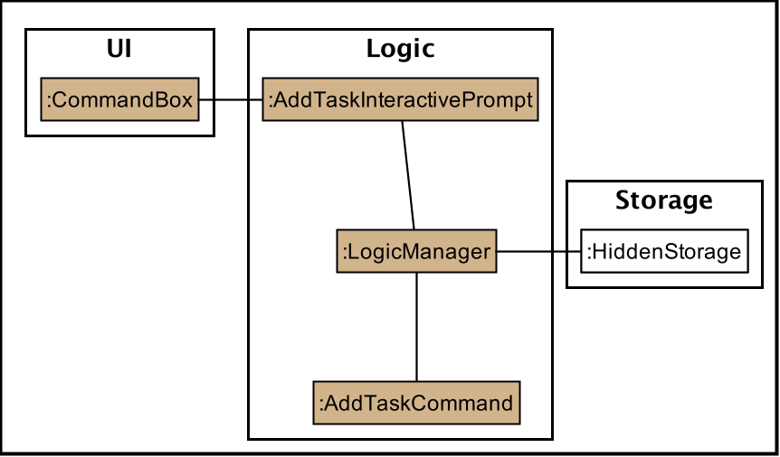

Overview
StudyBuddy is a desktop application designed for students who wish to manage their module related tasks in a convenient and user-friendly interface. The application is written in Java and spans over 12k lines of code.
Summary of contributions
-
Major enhancement: designed the interactive process logic
-
Function:
-
It allows user to execute his/her command in an interactive way.
-
Display clear instruction or error message at each interaction step.
-
When invalid command received (e.g. the user made a typo mistake), the interaction will not terminate, instead, it will response with clear instruction and wait for user’s next action.
-
Allow user to quit from interaction using "quit" keyword.
-
-
Justification:
-
This feature saves user from remembering long, wordy commands to use the command line interface.
-
The "stay and wait" reaction against any invalid input improves the typo-tolerance of the application, which contributes a notable benefit to CLI users.
-
-
Highlights:
-
The implementation was challenging because it required a huge changes in the original logic.
-
The time left me to design and develop this logic was tight because I needed to finish it so that my team can started to work on their own part.
-
-
-
Major enhancement: designed the UI/UX of Study Buddy
-
Function:
-
The GUI of:
-
Landing page (i.e. the all tasks page)
-
Modules page
-
Statistics page
-
Calendar page
-
The Task card (i.e. the items in task list)
-
-
Responsive layout. The inner components can automatically adjust themselves according to the current width and height.
-
The mouse events when:
-
hovering on menu bar item, calendar button, as well as tabs in modules and statistics page
-
focusing on list items (e.g. all tasks list)
-
clicking on chars in statistics page
-
-
-
Justification:
-
The GUI of this application follows a relaxed style, which helps users to ease the pressure accumulated from school.
-
The responsive layout allows the application to be adapted to different screen sizes.
-
The mouse event makes it easier for user to focus on what he/she is doing.
-
-
Highlights:
To design and implement of the UI/UX requires lot of self-learning and reference.
-
-
Major enhancement: added task summary feature
-
Function:
-
Automatically summarizes the collected data into different charts.
-
pie chart compares the number of tasks in different statuses.
-
area chart summarizes the task deadlines or start dates for different modules.
-
stacked bar chart compares the weight of different types of tasks in each module
-
-
Retrieves and displays relevant tasks when user clicking on a chart.
-
Listen to the data change and update simultaneously.
-
-
Justification:
-
The statistics helps user to integrates scattered information in one place and represents in dynamic charts, witch makes the information more straightforward.
-
With this feature, user can be more productive as they have better idea of what is going on and what is more important.
-
The statistics is auto-generated along the way the user managing their records using keyboard input, which means this feature can contribute significant value to those fast typist.
-
-
Highlights:
-
The data bind of each chart is not easy to implement, especially when I take this opportunity to practice on Lambda.
-
It also needs to be careful when choosing a suitable chart for a data set. Even for the same collection of data, the comparison results obtained from different charts can be variant.
-
-
-
Major enhancement: added the Add and Edit command
-
Function:
-
Add: Allows user to add a new task in the list.
-
Edit: Allows user to edit an existing task in the list.
-
-
Justification:
This feature is extremely helpful to the user because it enables them to insert and edit task.
-
Highlights:
Implementing this basic functionality is not easy because it involves a lot of obvious and non-obvious validation, such as:
-
obvious: empty input for required fields, wrong input format etc.
-
non-obvious: the validation of time, task weight etc.
-
-
-
Minor enhancement: added the Sort command
-
Function:
-
Allows user to sort their tasks by:
-
Deadline / Task Start Date
-
Task Name
-
Creation Date & Time
-
-
-
Justification:
This feature can help uer to prioritize their task by desired aspect.
-
Team-based Tasks
-
Morphed the original AB3 into a different product: Study Buddy
-
Renamed the product
-
Edited and provided all pictures for User Guide:
-
Improved the code quality for the whole project:
-
Troubleshoot and fixed bugs at the whole project scope:
-
Helped Implemented the GUI for the whole project:
Review/Mentoring
-
Reviewed another team’s DG and provided useful feedback.
User guide
Given below are sections I contributed to the User Guide. They showcase my ability to write documentation targeting end-users. |
User Interface Introduction
(Contributed by Yuting, Hong Wen & Teik Jun)
Study Buddy makes use of color schemes and animations to enhance your user experience.
Dashboard
The dashboard is the landing page each time the application is launched.
It consists of different components that can interact with you and provide you with meaningful information.
Navigation Menu Bar
The menu bar is located at the top of the dashboard and is primarily used for navigation.
Shortcuts are available for navigating to each page:
F1 - Modules
F3 - Statistics
F4 - Calendar
F5 - Productivity
F6 - StudyBuddy (All Tasks)
All Tasks Panel
By default, the All Tasks Panel lists all unarchived task tasks with their detailed information in the order of creation date and time.

Task Badges
To highlight Module code, Task Type and Task Status of each task in the All Tasks list , we use Badges.
- Module Badges
-
-
All in light steelblue.
-
If the task is not related to any module, the Module Badges will be omitted.
-
- Task Type Badges
-
-
Badges of different types are in different colours.
-
- Task Status
-
-
Badges of different status types are in different colours.
-
Tasks that are due within a week (i.e. 7 days) will be marked as
Due Soon. You may need to use the refresh command ([Refresh]) to refresh the status of all your tasks.
-
Tasks Due Soon Panel
The tasks that are due within a week (i.e. 7 days) will be listed here. You can jump to [Due Soon Tasks] to get more details.
Task Badges
To highlight the Weight & Module Code,
Time left for deadline and Task Type of each task in the Tasks Due Soon Panel , we use Badges.
- Weight & Module Code
-
-
All in steelblue.
-
Display the weight and module code of a task.
-
- Time left for deadline
-
-
All in light orange.
-
Display the time left for a tasks' deadline.
-
More information please refer to [Due Soon Tasks]
-
- Task Type Badges
-
-
Badges of different types are in different colors.
-
Interactive Prompt Box
The Interactive Prompt Box can be found at the bottom of the user interface.
To interact with Study Buddy, you can enter the desired command in the box with the words Please enter your command here…
and press enter to execute.
The reply from Study Buddy will be displayed in the box above.

| To get more detailed information about how to use Study Buddy, please refer to [Features]. ==== Add (Contributed by Yuting) |
This command enables you to add a new task into Study Buddy.
-
Through the interaction, task’s details will be collected.
-
Required information: task name, task type, task deadline or duration
-
Optional information: module, task description, task weight, estimated number of hours needed
-
Input format requirement:
Information Type Format Requirement Example MODULE CODE2 or 3 letters + 4 digits + 1 letter (optional)
CS2101, CS2103T,
LSM1101INDEX NUMBER OF
MODULEInteger number
1
TASK NAMENo more than 20 characters
Demo presentation
INDEX NUMBER OF
TASK TYPEInteger number
1
TASK DEADLINE
OR DURATIONDifferent task types apply different date and time format
Deadline (for Assignment):
HH:mm dd/MM/yyyyDuration (for other task types):
HH:mm dd/MM/yyyy-HH:mm dd/MM/yyyyHH → hour, mm → minutes, dd → date, mm → month, yyyy → yearAssignment:
23:59 01/05/2020Meeting:
14:0 15/04/2020-16:0 15/04/2020TASK DESCRIPTIONNo more than 300 characters
this is a valid description
TASK WEIGHTPositive integer or float number from 0.0 to 100.0
12.0
ESTIMATED NUMBER OF HOURS NEEDEDPositive integer or float number
10.0
-
Other constraints::
-
The application does not allow you to enter a name that has special characters (any character that is not a letter in the alphabet).
-
The application does not allow you to assign date time that has already passed to a task. It must be a time in the future.
-
For duration, the two dates should follow the order of
start date-end date, theend dateshould be later thanstart date. -
The total weight of tasks under the same module is capped at 100.0.
-
Both
archivedandnot archived taskswill be taken into consideration. -
This constraint also applies to tasks without module information. Those tasks will be treated as from a same extra module. It is designed for you to practice your time management skill :).
-
-
All
index numbersentered should be positive and within a valid range. (i.e When there is only 5 modules available, the valid module index number range is 1 to 5). -
The "Required Information" cannot be empty, on the other hand, you can press enter to skip the "Optional Information".
-
-
Adding duplicate tasks:
-
Look at [Add duplicates] for more information.
-
-
To add:
-
Initiate the command using keyword
add+ enter. -
Study Buddy should start with asking module information with
a list of available modulesas:Figure 5. Reponse to 'add', asks for module -
You can link this task with a module by entering its
MODULE CODE|INDEX NUMBER OF MODULEhere , or you can press enter to skip. Here we use "1" (CS2101) as an example. -
After the selection of module, Study Buddy should ask for the task name. Here we use "new task" as an example.
-
After entered the task’s name and press enter, Study Buddy should prompt for task type with the list of available types as:
 Figure 6. Asks for task’s type
Figure 6. Asks for task’s type -
You can use the
INDEX NUMBERhere to choose a task type. Here we use "1" (Assignment) as an example. -
After the selection of task type, Study Buddy will prompt for new task’s date-time information together with the type related date-time format (i.e. different task types support different date-time formats). Here we use "14:00 04/05/2020" as an example.
-
Next, Study Buddy should ask for the new task’s description, and we use "new task description" as an example.
-
Then, Study Buddy should ask for the new task’s weight. Here we use "10" as an example.
-
Next, Study Buddy will prompt for the estimated number of hours needed for this new task. Here we use "10" as an example.
-
Once you specify the estimated time needed and press enter, Study Buddy should respond with the task details collected and ask for your confirmation to add the task as:
 Figure 7. Asks for user conformation to add a new task
Figure 7. Asks for user conformation to add a new task Figure 8. Task details collected
Figure 8. Task details collected -
Now, by pressing enter the new task will be added into your Study Buddy. Meanwhile, the All Tasks Panel will update accordingly. For this example, the panel should update as below.
Figure 9. New task added
Remember, you can use quit command to quit at any step.
==== Edit
(Contributed by Yuting)
|
This command is for you to edit an existing task. To indicate the task you want to edit, you need to provide its index number.
Example:
Say when there are some typo in an existing task. You can use this command to edit as you wish.
Constraints
-
Each new value entered will be checked under the same constrain of add command. More info you can refer from [Add].
-
When editing weight or module, the application will also make sure the total weight of related module’s tasks will not overflow (i.e. exceed 100).
-
You cannot edit a task to be a duplicate. i.e all the fields cannot be the same as a task that already exists.
-
Due to the
deadline/Duration formatis different fromAssignmenttoOther Task Types, we currently don’t support:-
Assignment→Another Tsk Typeediting -
Another Tsk Type→Assignmentediting
-
To edit:
-
Initiate the command using keyword
edit+ enter. -
Study Buddy should start the task editing interaction by asking you the index number of the desired task. Here use "1" (Homework 1) as an example.
-
When you specified the target task, Study Buddy should continue the interaction by prompting you with the list of editable information. You can choose any of them via an index number. Here we use "2" (Task name) as an example.
 Figure 10. List of editable fields
Figure 10. List of editable fields -
After you selected the field to edit, Study Buddy should asks you for the new value. For this example, let’s use "Updated Task" as the new task name.
-
Once you specified the updated information and press enter, the updated record will be captured, and the All Tasks Panel will update automatically. For this example, the panel should update as below.
 Figure 11. Task edited
Figure 11. Task edited==== Sort (Contributed by Yuting)
This command is for you to reorder the task list in All Tasks Panel.
- Currently you can sort tasks by their
-
-
Deadline / Task Start Date
-
Task Name
-
Creation Date & Time
-
Example
When you want to sort all your unarchived tasks by their deadline or start date, you may utilize this command to achieve the desired order.
To sort:
-
Initiate the command using keyword
sort+ enter. -
Study Buddy should provide the list of sorting options as below， and you can use the index number to select the desired sort. Here we use
1(Deadline / Task Start Date) as an example. Figure 12. Sorting options and the order of the tasks before sort
Figure 12. Sorting options and the order of the tasks before sort -
After the selection, Study Buddy should ask for your confirmation to perform the reorder. You can press enter again to confirm. Meanwhile, the tasks in All Tasks Panel will be sorted accordingly.
 Figure 13. The order of the tasks after sort
Figure 13. The order of the tasks after sort
|
The tasks in All Tasks Panel will not change back to the original order by itself. You can use sort → Creation Date & Time to do so.
=== Statistics
(Contributed by Yuting)
|
With all the tasks and modules' information you entered, Study Buddy can provide you with a real-time visualized statistics about:
-
Task status
-
Module related tasks' deadline/ start date
-
Module related tasks' weight
It utilizes different types of charts to make the information more intuitive.
In addition, the chart is always updated in sync with your task records.
Especially when you execute commands such as
add edit delete sort find archive done list and clear.
| The colour theme will also change randomly, hope you enjoy :) |
|
The statistics feature is built on top of the data collected from the basic functionality described in [Basic features].
Which means Study Buddy only supports keyboard input for statistics generating. Therefore, even though this feature involves mouse-clicking, it is still designed for a fast typist. |
Navigate to Statistics Page
You can navigate to Statistics page by clicking the Statistics from the menu bar.

Statistics Page User Interface and Interaction
The left panel contains different charts for different statistics. You can use the tabs circled in light orange to navigate.
When you click on a statistics chart, the associated task records will be listed automatically in the right-side panel.

Task Status Tab
- Introduction
-
This clickable pie chart compares the number of tasks in different statuses.
 Figure 16. Task Status Chart
Figure 16. Task Status Chart - Clicking Action
-
When you click on the chart, all tasks with the selected status will display on the right-side panel automatically.
Here is an example when you are clicking on the Due Soon portion.
-
The part highlighted by light purple lines represents all your Due Soon tasks. When you are clicking on it, all tasks with Due Soon status will be listed in the right-side panel.
You can refer to the screenshot below where the relevant information is highlighted for you.
Figure 17. Clicking on 'Due Soon' part
-
Module Related Tasks' Deadline/Start Date Tab
- Introduction
-
This clickable area chart summarizes the task deadlines or start dates for different modules.
 Figure 18. Module Related Tasks' Deadline/Start Date Chart
Figure 18. Module Related Tasks' Deadline/Start Date Chart- Chart Details
-
-
The X-axis represents a particular date.
-
The Y-axis represents the number of tasks.
-
The area (i.e. The triangles or quadrilaterals exclude their vertices) with the same background colour represents the tasks under the same module.
-
The data point (i.e. The vertices of the triangles or quadrilaterals) represents tasks under a particular module, which will due or start on the same specific data.
-
Tasks under different module have a different background colour.
-
Only the tasks due or start within the next 60 days will display in both chart or right-side panel.
-
Since the colour of each module is translucent, "extra" colours may appear as a result of data overlapping.
-
When clicking on an overlapping area, only one layer’s related records will be listed in the right-side panel.
-
- Clicking Action
-
After you click on the chart, the related task records will display on the right-side panel automatically.
Here are two different behaviours according to the place you click.
-
Click on data area:
The tasks under a particular module will be listed in the right-side panel.
Here is an example when you are clicking on the area of module "CS2101".
-
The parts highlighted using light purple lines represents the tasks under module "CS2101". When you are clicking on those areas, the tasks under CS2101 and will due or start within the next 60 days will display in the right-side panel.
You can refer to the screenshot below where the relevant information is highlighted for you.
Figure 19. Clicking on the area of module 'CS2101'
-
-
Click on data point:
The tasks under a particular module and will due or start on a specific date will be listed in the right-side panel.
Here is an example when you are clicking on the data point of tasks under module "CS2101" and will due or start on 13/04/2020.
-
The point circled in light purple is the data point you clicked. After you clicked on this point, the tasks under module "CS2101" and will due or start on 13/04/2020 will display in the right-side panel.
You can refer to the screenshot below where the relevant information is highlighted for you.
Figure 20. Clicking on the data point of module 'CS2101’s tasks which will due or start on 13/04/2020
-
-
Module Related Tasks' Weight Tab
- Introduction
-
This clickable stacked bar chart compares the weight of different types of tasks in each module.
 Figure 21. Module Related Tasks' Weight Chart
Figure 21. Module Related Tasks' Weight Chart- Chart Details
-
-
The X-axis represents different modules.
-
The Y-axis represents the weight-sum under the same module.
-
The blocks in each bar represent the total weight of a particular task type.
-
Different task type has a different background colour.
-
- Clicking Action
-
After you click on the chart, the tasks under the selected module and type will display on the right-side panel automatically.
Here is an example when you are clicking on the block which represents the assignments of module "CS2101".
-
The block highlighted using light purple lines represents the assignments of module "CS2101". When you are clicking it, all assignments of module "CS2101" will show in the right-side panel.
You can refer to the screenshot below where the relevant information is highlighted for you.
 Figure 22. Clicking on the block of 'CS2101''s assignments
Figure 22. Clicking on the block of 'CS2101''s assignments
-
|
As the data of charts are filled dynamically, thus it is possible that their labels can overlap together. This is an unfixed bug regarding the JDK which is caused by JavaFX chart off-sync. To get more information, you may refer to here. When this issue happens, you can use any command that can trigger chart updating to refresh the chart. |
Developer Guide
Given below are sections I contributed to the Developer Guide. They showcase my ability to write technical documentation and the technical depth of my contributions to the project. |
UI component

API : Ui.java
The UI consists of a MainWindow which is made up by different components such as StatusBarFooter, FeedbackDisplayBox,
CommandBox as well as variants Panels and Cards. All these components, including the MainWindow, inherit from the abstract UiPart class.
The UI component uses JavaFx UI framework.
The layout of these UI parts are defined in matching .fxml files that are in the src/main/resources/view folder.
For example, the layout of the MainWindow is specified in MainWindow.fxml
- The
UIcomponent -
-
Interacts with user in an interactive process with the help of
Logiccomponent.-
CommandBoxcollects the user keyboard input. -
Logicparses user input in each interaction and executes the command subsequently if the interaction ends without any exception. -
FeedbackDisplayBoxresponses system information to user, such as error message and command execution result.-
When invalid input received, proper message will respond via
FeedbackDisplayBox. The interaction of the command will not be terminated, user can continue with the process with valid input.
-
-
-
Listens for changes to Model data so that the UI can be updated simultaneously.
-
All Cards components and
CalenderPanel,ModuleListPanel,ProductivityPanelandTaskSummaryPanelwill listen to the changes to Model data.
-
-
|
The command execution will only terminate in two scenarios: 1. When the command is successfully executed. 2. When the user enter quit and enter to exit the execution.
=== Interactive Command Process Feature
|
Implementation
-
Feature introduction
The Interactive Command Process Feature allows user to execute his/her command in an interactive way.
-
Implementation detail
This feature applies on all commands provided by Study Buddy and is implemented using:
-
The
CommandBoxfromUIcomponent to collect user input and init an associate interactivePrompt -
The
InteractivePromptfromLogiccomponent to parse user input step by step and generate meaningful response message accordingly. It also produces an executableCommandfrom each successful interaction to perform the user’s desired action.-
Different types of
InteractivePromptsuch asAddTaskInteractivePromptare provided to handel interactions with different purpose.Figure 24. Object diagram when user add task using interactive command process -
Allow user to quit from each step of an interaction using
quit(case insensitive) key word. Here is an example of user quiting from add task interactive command process. Figure 25. Activity diagram when user quite from add task interactive command process
Figure 25. Activity diagram when user quite from add task interactive command process
-
-
Example Usage Scenario
Given below is an example usage scenario and how the interactive command process mechanism behaves at each step.
Step 1. The user launches the application for the first time and skips the user guid.
By following the hint from UI (i.e. when CommandBox is idle, it should display "Please enter your command here…"),
he can try some random input and hit enter to get the list of available commands.
Step 2. The user picks a command from the list and type it in the CommandBox. The guide information of the next step will
display in FeedbackDisplayBox after user press enter.
For some commands there is only one interaction involved, such as help and list. In such a case
the application will execute the command right after user press enter.
|
Step 3. The user made a typo mistake in the data and time filed when adding a task record.
Proper massage with the error type and the correct format of the data and time will be displayed in the
FeedbackDisplayBox. User can follow the instruction to continue the interaction.
Step 4. The user is performing an interaction to edit a task, but realized he/she
chose a wrong task from the list, he/she can use quit to exit
the process without making any changes to the task.
Design Considerations
Aspect: How to react to an invalid input
-
Alternative 1 (current choice): provides relevant error message and stays at current interaction step.
-
If the next input is
-
Invalid: provides the relevant error message and continue waiting for another input.
-
Valid: start next interaction step.
-
quit: quite from the command process.
-
-
Pros: Save the data from previous stages, especially in add task interaction, thus user no need to repeatedly enter the same information. Also the clear instruction provided by error message makes the interaction more straightforward. Besides, this approach can improve the typo-tolerance of the application.
-
Cons: The interaction can only be stopped when user successfully complete the process or use
quitto exit half-way.
-
-
Alternative 2: Quite from current step with proper error message.
-
Pros: Quit the interaction immediately, which allows user to start with a new interaction. It will be useful when user want to quit from a particular process but forgets the exit command (i.e.
quit). -
Cons: User has to restart the entire interaction process when the he/she enter invalid command. === Task Summary Feature
-
Implementation
-
Feature introduction
The task summary feature automatically summarizes the collected data into different charts. It also allows the user to click on a chart to find the relevant tasks. The UI of the feature is in the
StatisticsPage. -
Implementation detail
This feature is implemented using
JavaFxcharts such asPieChart,AreaChartandStackedBarChart, as well as aTask List Panel.The
Task List Panelis used to show the relevant task records when the user clicks oncharts. -
Table of Charts & DataBind & OnClick Action
To improve the readability, only the tasks due or start within the next 60 days will be counted into Area Chart.Chart Type Data Used OnClick Action PieChart
{bl} Compare the number of tasks in different statuses.{bl}
TaskStatus,TaskCountDisplay all tasks with the selected status.
AreaChar
{bl} Summarize the task deadlines or start dates for different modules.{bl}
ModuleCode,Deadline/Start date,
TaskCountClick on area:
Display tasks under the selected module.
{bl} Click on data point:
Display tasks under the selected module and will due or start the chosen date.StackedBar Chart
{bl} Compare the weight of different types of tasks in each module.{bl}
ModuleCode,TaskType,WeightSumDisplay tasks under the selected module and type.
 Figure 26. Sequence diagram for task summary UI update when data change
Figure 26. Sequence diagram for task summary UI update when data change -
OnChangeListener
The feature listens to the change of
Model’sUnArchived Task Records,Archived Task RecordsandModule Records.Once a change is captured, the charts will automatically re-render to show the latest statistics.
Currently, commands as
addeditdeletesortfindarchivedonelistclearetc. can trigger the refresh of the charts. Figure 27. Sequence diagram for task summary UI update when data change
Figure 27. Sequence diagram for task summary UI update when data changeIt is possible that the labels of charts can overlap together. This is an unfixed bug regarding the JDK which is caused by JavaFX chart off-sync. To get more information, you may refer to here. When this issue happens, you can use any command that can trigger chart updating to refresh.
Example Usage Scenario
Given below is an example usage scenario and how the task summary mechanism behaves at each step.
Step 1. The user launches the application for the first time, the statistics will perform on top of the sample records,
and the result will be visualized into different charts organized in the Tab Panel. After the user clicks Statistics
from the top menu bar, the Tab Panel and the Task List Panel will display.
Step 2. The user navigates to the Statistics Page for the first time. The Tab Panel should
display the Pie Chart and the Task List Panel is empty with a title: "Click on Chart to View Related Tasks".
Indeed, this is how the Statistics Page looks like every time the user navigates back from another Page.
Step 3. The user clicks on Pie Chart 's Pending portion. All tasks in Pending status should display in Task List Panel.
Meanwhile, the title of the Panel will change to "PENDING: # Tasks" (# stands for the number of Pending tasks).
Step 4. The user clicks on Area Chart 's CS2101 area. All tasks under CS2101 should display in Task List Panel.
Meanwhile, the title of the Panel will change to "Tasks under CS2101".
Step 5. The user executes add command at Statistics Page,
the charts should update automatically.
Step 6. The user executes done command at another page, and navigate back to Statistics Page
the charts should show the latest statistics.
Design Considerations
Aspect: Will this feature contribute value to CLI user
- Consideration
-
Task Summary feature involves mouse clicking event when user retrieving relevant tasks.
- Explanation
-
The Task Summary Feature provides tow main services:
-
The automatic statistics of the user input (i.e. the tasks and modules information).
-
The relevant records retrieving.
The retrieving service is built on top of the statistics result. Meanwhile, the statistics is auto-generated along the way the user managing their records using keyboard input.
Therefore, this feature can make a fast typist be more productive, especially when Study Buddy primarily supports the CLI. -
Aspect: How to update charts
-
Alternative 1 (current choice): Use
onChangeListenerto monitor the data update and re-render the UI simultaneously.-
Pros: More user-friendly, no need to ask user to manually update.
-
Cons: Might encounter JavaFX chart off-sync bug, and results in label overlapping. But user can always use another command which can trigger data updating to walk around this problem.
-
-
Alternative 2: Trigger the UI rendering by asking the user to re-launch the application or navigate away and back to the page.
-
Pros: Safe from the JavaFX chart off-sync bug.
-
Cons: Force user to close or navigate around the application every time he/she wants to check the updated charts.
-